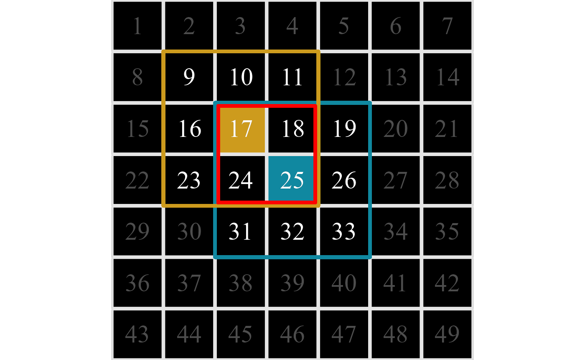
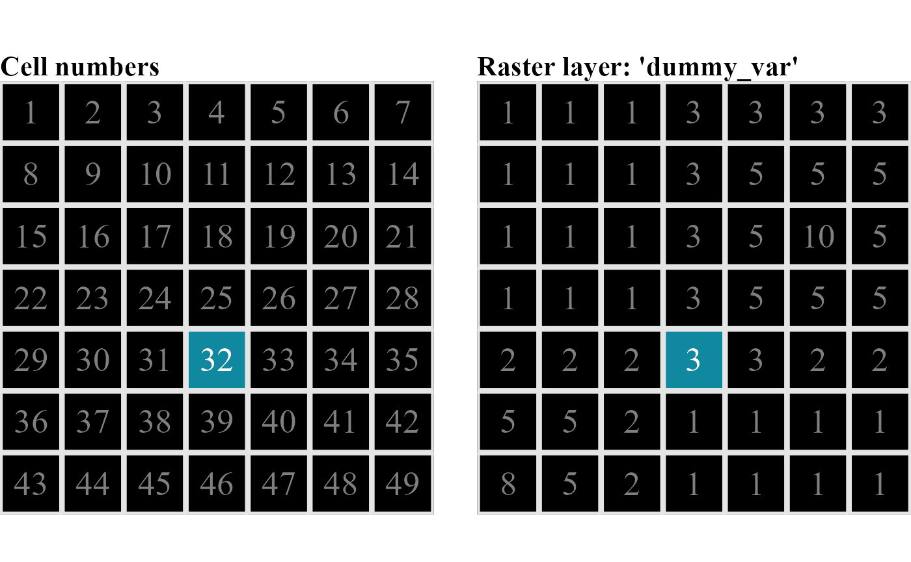
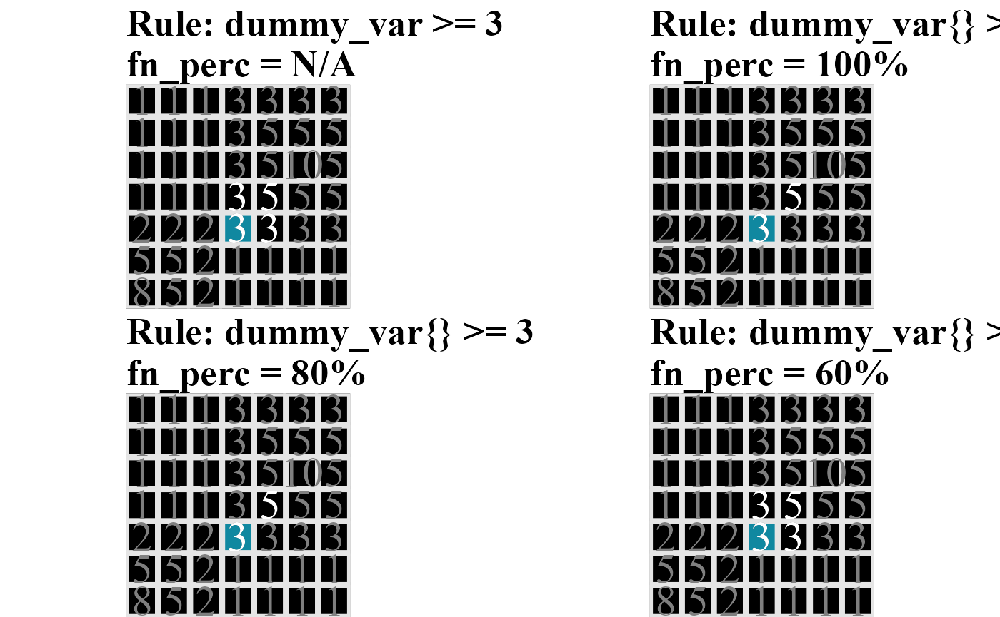

vignettes/articles/scapesClassification_01_3_ClassRules.Rmd
scapesClassification_01_3_ClassRules.RmdIn scapesClassification, geo-spaces are classified using user-defined classification rules presented in the form of conditional statements. Classification rules evaluate either to true or false and determine what raster cells belong to a class.
Classification rules access by name the variables stored in the attribute table (see the article format inputs and ?attTbl). For instance, the classification rule "slope > 5 & height > 1000" would refer to the values stored in the columns "slope" and "height" and compare them against the respective threshold value.
ScapesClassification functions accept rules in the form of character string. Rules can include a combination of arithmetic (+|-|*|/|^|%%|%/%), relational (>|<|>=|<=|==|!=|%/%) and logic operators (&||), base R functions (e.g., abs(variable_name)), variables names (i.e., names(attTbl)) and previous classifications (either stored as "classVector" or as rasters) (see ?conditions).
The different types of classification rules used by scapesClassification can be better explained considering figure 1 and the following definitions:
Cell neighborhood. The neighborhood of a raster cell with coordinates (x, y) counts 8 neighbors with coordinates (x±1, y), (x, y±1) and (x±1, y±1). Note that edge cells have less than 8 neighbors (see the article format inputs and figure 1).
Focal cell. Cell identified by a particular class. Cells in the neighborhood of a focal cell are evaluated against the classification rule(s). In figure 1 there is one focal cell, cell number 32.
Test cell. The cell in the neighborhood of the focal cell that is being tested. At turns all cells in the neighborhood of a focal cell are tested against the classification rule(s). In figure 1 the cell being tested is cell 25.
Directional neighborhood. It consists of the intersection between the focal and the test cell neighborhoods. In figure 1 it is marked by a red border and includes cells 24, 25, 26, 31, 32 and 33.

1:49). The focal cell is cell number 32 (in blue). The test cell is cell number 25 (in yellow). The focal cell neighborhood is marked by the blue border (cells 24,25,26,31,33,38,39,40). The test cell neighborhood is marked by the yellow border (cells 17,18,19,24,26,31,32,33). The directional neighborhood is marked by the red border (cells 24,25,26,31,32,33). On the right, a dummy raster layer named 'dummy_var'.
The dummy raster of figure 1 will be used to illustrate the different types of classification rules used by scapesClassification functions. Additional information can be found in the documentation of the function conditions() and in the article “classification functions”.
Absolute conditions compare a variable value against a user-defined threshold value. There are two types of absolute conditions: (i) absolute test cell rule and (ii) absolute neighborhood rule (Figure 2).
Absolute test cell rule. Compares the test cell value against a threshold value. Test cells are classified if the rule evaluation is true.
Absolute neighborhood rule. Compares the values of the test cell and of its neighborhood against a threshold value and has the following properties:
It is identified by a variable name followed by curly brackets (e.g., 'dummy_var{}');
A maximum of 9 evaluations are performed for each test cell (the test cell itself and its neighborhood are compared against a threshold value);
Test cells are classified if the rule is true for at least as many evaluations as the ones specified by the argument fn_perc. In figure 2 fn_perc is set to 60%, meaning that test cells are classified if the condition is true for at least 6 out of the 9 cells comprising the test cell and its neighborhood (60% of 9 evaluations is equal to 5.4 true evaluations);
Only one neighborhood rule is allowed for each condition string (e.g., it is not possible to have a condition string like 'dummy_var1{} > 0 & dummy_var2{} > 1').

'dummy_var >= 3'. Test cells are classified if their value is >= 3. On the right, absolute neighborhood rule 'dummy_var{} >= 3' with fn_perc = 60%. Test cells are classified if at least 6 out of the 9 cells comprising the test cell and its neighborhood have values >= 3 (60% of 9 evaluations is equal to 5.4 true evaluations).
Relative conditions compare the values of contiguous cells. There are two types of relative conditions: (i) relative focal cell rule and (ii) relative neighborhood rule (Figure 3).
Relative focal cell rule. Compares the test cell value against the focal cell value and has the following properties:
It is identified by a variable name followed by square brackets (e.g., 'dummy_var[]');
Rules are defined repeating twice the same variable name, once with square brackets and once without. Square brackets indicate the focal cell value. In figure 3 the rule 'dummy_var < dummy_var[]' compares the value of the the test cell (dummy_var) against the value of the focal cell (dummy_var[]);
Test cells are classified if the rule is true.
Relative neighborhood rule. Compares the values of the test cell against the values of its neighborhood and has the following properties:
It is identified by a variable name followed by curly brackets (e.g., 'dummy_var{}');
Rules are defined repeating twice the same variable name, once with curly brabrackets and once without. Curly brackets indicate the test cell neighborhood. In figure 3 the rule 'dummy_var < dummy_var{}' compares the value of the the test cell (dummy_var) against the values of the test cell neighborhood (dummy_var{}).
Test cells are classified if the rule is true for at least as many evaluations as the ones specified by the argument fn_perc. In figure 3 fn_perc is set to 60%, meaning that test cells are classified if the value of the test cell is smaller than 5 or more neighbors (60% of 8 evaluations is equal to 4.8 true evaluations);
Only one neighborhood rule is allowed for each condition string (e.g., it is not possible to have a condition string like 'dummy_var1{} > dummy_var1 & dummy_var2{} > 1').

'dummy_var < dummy_var[]'. Test cells are classified if their value is smaller than the value of the focal cell. On the right, relative neighborhood rule 'dummy_var < dummy_var{}' with fn_perc = 60%. Test cells are classified if their value is smaller than 5 or more neighbors (60% of 8 evaluations is equal to 4.8 true evaluations).